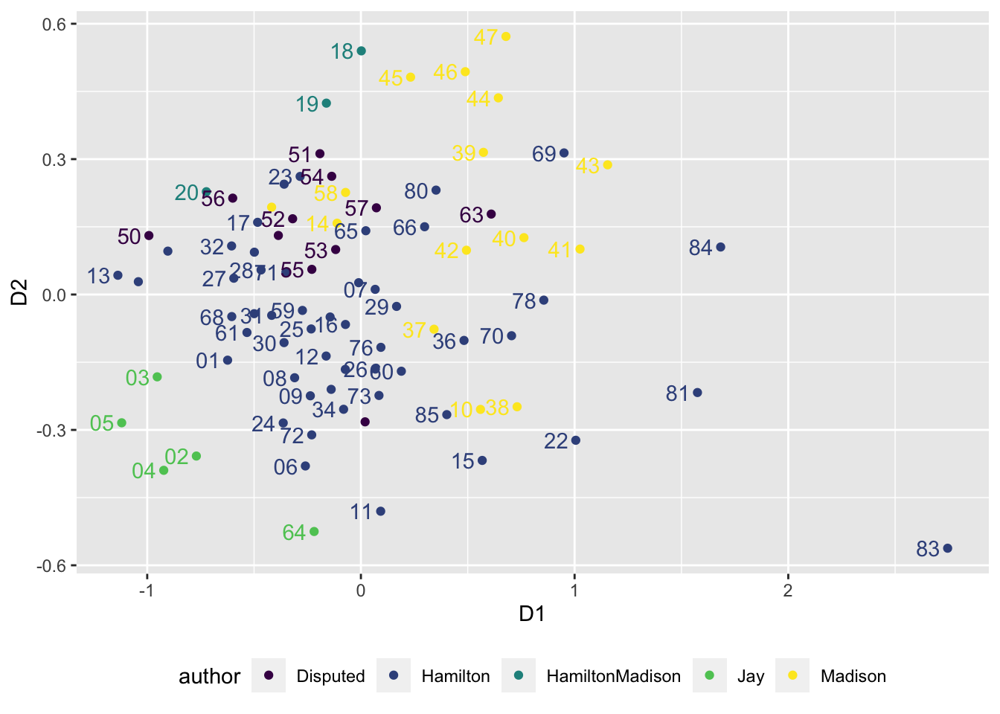
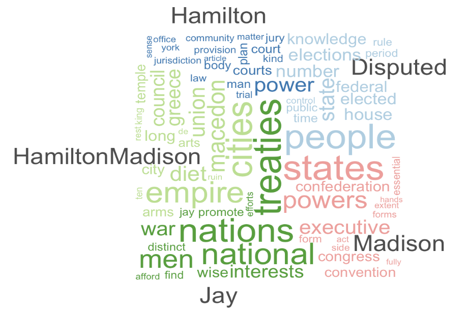

Chapter 8 Patterns in Text as Data
Chapter 8 introduces methods for quantifying relationships between texts and the thematic content of texts.
Learning objectives and chapter resources
By the end of this chapter, you should be able to (1) import unstructured text data; (2) prepare a structured corpus and ‘tokenized’ text; (3) apply scaling and clustering methods to classify text documents by meta characteristic; (4) create word clouds to summarize thematic content; and (5) apply topic modeling to identify thematic content. The material in the chapter requires the quanteda (Kenneth Benoit et al. 2023, 2018; Watanabe and Müller 2023) package and ancillary quanteda.textstats, along with readtext (Kenneth Benoit and Obeng 2023), stopwords (Kenneth Benoit, Muhr, and Watanabe 2021), and seededlda (Watanabe and Xuan-Hieu 2023), all of which will need to be installed individually. We will apply the smacof package (Mair, De Leeuw, and Groenen 2022) to scaling text data and rely on tidyverse (Wickham 2023b)packages including _stringr__ (Wickham 2022) for data import, management, and visualization. The material uses the following datasets federalist.zip and reg_comments_sampled.csv from https://faculty.gvsu.edu/kilburnw/inpolr.html.
8.1 Text as data
In 1897 Wincenty Lutosawski, a Polish scholar of literary texts, published The Origin and Growth of Plato’s Logic: With an Account of Plato’s Style and the Chronology of His Writings.21 As implied by the title, Lutosawski found evidence to order by date Plato’s dialogues, through the distinctive elements of Plato’s writing style as it changed over time throughout his life (Lutosławski 1897). Lutosawski measured Plato’s writing style through counting variation in verb forms and various other parts of speech, coining the term “stylometry” to describe the systematic measurement of writing style. His theory — that an individual author’s distinctive writing style could be measured in part through word frequencies — was remarkably prescient.
While Lutosawski counted frequencies by hand, modern researchers use algorithms for the tedious work. Beyond simple counting, these algorithms classify texts based on stylistic characteristics, just as Lutosławski classified Plato’s works into time periods. One enduring example of this is the analysis of the disputed authorship of The Federalist papers (Mosteller and Wallace 1963), which we will investigate in this chapter. By leveraging computational tools, we can measure stylistic markers such as word frequencies to uncover patterns and relationships in texts. We will apply the scaling tools from Chapter 7 on texts to find evidence of authorship.
The field of “text as data” has rapidly grown in political science and other disciplines (Ken Benoit 2020). The term refers to the process of treating written or spoken language—such as floor speeches in Congress, country statements at the United Nations, or local news stories—as quantifiable data. Researchers analyze patterns in texts to uncover insights into political behavior, public opinion, or social processes. A common approach involves analyzing word frequencies within and across documents, using these patterns to test hypotheses or discover relationships.
For example, political scientists might quantify the emotional sentiment of candidate statements by political party or assess the authorship of texts. These analyses often rely on computational methods to preprocess texts, breaking them into smaller units of analysis, such as individual words or phrases, a process known as “tokenization”. Tokens, which may represent words, phrases, or even parts of speech, form the foundation for further analysis.
Two key distinctions in analyzing text as data shape how researchers approach their work. First, researchers study patterns in “function” words or “content” words. Function words, such as pronouns, articles, and prepositions (e.g., “they,” “the,” “and,” “in”), serve as the structural glue that holds sentences together. Content words, on the other hand, carry substantive meaning and include nouns, verbs, adjectives, and adverbs (e.g., “faction,” “run,” “beautiful,” “quickly”). Function words are often used to explore stylistic features of texts, such as authorship or linguistic style, while content words are more useful for analyzing thematic content or topics.
Second, researchers approach these analyses from a “bag of words” or a “strings as words” approach. In a bag of words approach, the order of words is disregarded. Instead the occurrences of words, or co-occurrences across texts, are measured. In the strings as words approach, the order of words is considered to assess patterns in their arrangement. The bag of words approach is foundational in text analysis and forms the basis of the methods we will explore in this chapter.
The analysis within this chapter begins with The Federalist papers, applying a bag of words approach to investigate the authorship of the texts. We will tokenize the documents, construct matrices of term frequencies and distances between papers, then apply the multidimensional scaling analysis from Chapter 7 to uncover patterns in authorship. We will see how Lutosławski’s insights into writing style remain relevant in the modern era of computational text analysis. Then we will shift to methods for uncovering thematic content of The Federalist and next the content of a bureaucratic regulation proposal affecting the interpretation of Title IX of US civil rights law.
8.2 Organizing text as data
In Figure 1.1 from Chapter 1, the process of data analysis involving “Transform” is especially important in text as data. Unstructured text data must be transformed into a structured format for analysis. A text document is imported into RStudio and organized into different data structures for further analysis. Typically, this process means importing raw text data (plain text files ending with .txt) and then storing it within the RStudio environment in a particular data structure.
One commonly used data structure is a corpus object. A corpus is a structured collection of text files that not only preserves metadata (such as author, date, or source) but also facilitates access to the text for further processing. The next step is breaking the text into smaller analytical units known as “tokens”. Tokens are typically words or word phrases, but they can also represent sentences or even parts of speech. A more precise term for tokens is n-grams, where “n” refers to the number of combined words. For example, a “1-gram” represents a single word, while a “2-gram” refers to a two-word phrase, such as “of the” or “it is.” Tokenizing a corpus enables the measurement of term frequencies.
Once tokenized, the text can be organized into a document features matrix (DFM), a foundational data structure for text analysis. In a DFM (also known as ‘document term matrix’), rows correspond to n-grams (or tokens), columns represent documents in the corpus, and each cell contains the frequency of a term’s occurrence within a specific document. This matrix provides a numerical representation of the text, which can be used for analyses based on the bag of words approach. In the examples below, we import text files, tokenize them, and construct term document matrices as a basis for further exploration and analysis.
Importing text documents
Text as data may often be organized as individual files, such as news media stories, debate transcripts, or court decisions — one file per story, speech, or opinion. For example, Project Gutenberg (2024) or The Hathi Trust (2024) are two sources for public domain text-based primary sources. We will import The Federalist papers in individual text file format, then review more familiar methods of working with text data in CSV format.
The Federalist papers were a set of 85 essays written by John Jay, Alexander Hamilton, and James Madison, published under the pen name ‘publius’ in New York newspapers from the years 1787 to 1788. In defense of the institutional arrangements of the new Constitution proposed in the summer 1787 Philadelphia convention, Jay wrote numbers 2-5 and 64, while most were written by Hamilton and Madison individually, and as co-authors numbers 18-20. The set of papers with disputed authorship — either Hamilton or Madison — are numbers 49-57, 62, and 63.
Download the set of Federalist Papers. The .zip file contains individual text files for each one. We will use the function readtext() from the readtext package to import the documents, which will organize the text documents into a dataframe. Unzip the folder of Federalist papers and observe how each one is saved as a separate text file. The Federalist Papers filenames are organized with the number of the essay first, separated by an underscore, then the known or disputed author. For example, Federalist 1 is titled 01_Hamilton.txt.
To read in all text documents within a working directory, the function would be readtext("*.txt"). The character * in readtext() is a “wildcard character”, meaning that it represents any and all file character strings or names. In this context, it means readtext() will attempt to read in every file of any name in the directory, as long as it is a text file (“.txt”). For the function to work without a file path ("your file path/*.txt"), first set the working directory to the location of the files (Session…Set Working Directory). We read in each text file with the readtext() from the readtext package:
## readtext object consisting of 85 documents and 0 docvars.
## # A data frame: 85 × 2
## doc_id text
## <chr> <chr>
## 1 01_Hamilton.txt "\"General In\"..."
## 2 02_Jay.txt "\"Concerning\"..."
## 3 03_Jay.txt "\"The Same S\"..."
## 4 04_Jay.txt "\"The Same S\"..."
## 5 05_Jay.txt "\"The Same S\"..."
## 6 06_Hamilton.txt "\"Concerning\"..."
## # … with 79 more rowsThe papers are imported as 85 separate rows of a dataframe with a column for the doc_id (the text file name), and text the full text of each document. Notice that the function reports 0 docvars, which are meta-level characteristics. We can modify the readtext() function to include meta characteristics such as the author (or purported author) and include the characteristics when it is read, by specifying two additional arguments, docvarsfrom for the source of the metadata and docvarnames for the intended name of the metadata. The metadata is pulled from two parts of the filename based on the underscore character that separates name and author:
fed_papers<-readtext("*.txt", docvarsfrom="filenames",
docvarnames=c("number", "author"), dvsep="_")Now the number and author variables for each paper specify these two characteristics. The docvars() function with fed_papers as an argument returns each document variable. The selection of meta characteristics should be related to theoretical considerations, a feature related to the analysis task at hand. In this case, the meta characteristics are the basis for investigating authorship of the disputed series of The Federalist papers.
8.3 Corpus, tokens, and the document features matrix
Though the text is imported, it is not yet a corpus. To create one we apply corpus() on the imported readtext object fed_papers.
## Corpus consisting of 85 documents and 2 docvars.
## 01_Hamilton.txt :
## "General Introduction For the Independent Journal. HAMILTON T..."
##
## 02_Jay.txt :
## "Concerning Dangers from Foreign Force and Influence For the..."
##
## 03_Jay.txt :
## "The Same Subject Continued: Concerning Dangers From Foreign ..."
##
## 04_Jay.txt :
## "The Same Subject Continued: Concerning Dangers From Foreign ..."
##
## 05_Jay.txt :
## "The Same Subject Continued: Concerning Dangers From Foreign ..."
##
## 06_Hamilton.txt :
## "Concerning Dangers from Dissensions Between the States For t..."
##
## [ reached max_ndoc ... 79 more documents ]The result shows the corpus as the text for each of the 85 essays, along with the two meta characteristics for author and number of essay.
Tokenizing a text
To create the tokens, the tokens() function tokenizes the corpus:
## Tokens consisting of 85 documents and 2 docvars.
## 01_Hamilton.txt :
## [1] "General" "Introduction" "For"
## [4] "the" "Independent" "Journal"
## [7] "." "HAMILTON" "To"
## [10] "the" "People" "of"
## [ ... and 1,778 more ]
##
## 02_Jay.txt :
## [1] "Concerning" "Dangers" "from"
## [4] "Foreign" "Force" "and"
## [7] "Influence" "For" "the"
## [10] "Independent" "Journal" "."
## [ ... and 1,857 more ]
##
## 03_Jay.txt :
## [1] "The" "Same" "Subject"
## [4] "Continued" ":" "Concerning"
## [7] "Dangers" "From" "Foreign"
## [10] "Force" "and" "Influence"
## [ ... and 1,625 more ]
##
## 04_Jay.txt :
## [1] "The" "Same" "Subject"
## [4] "Continued" ":" "Concerning"
## [7] "Dangers" "From" "Foreign"
## [10] "Force" "and" "Influence"
## [ ... and 1,825 more ]
##
## 05_Jay.txt :
## [1] "The" "Same" "Subject"
## [4] "Continued" ":" "Concerning"
## [7] "Dangers" "From" "Foreign"
## [10] "Force" "and" "Influence"
## [ ... and 1,502 more ]
##
## 06_Hamilton.txt :
## [1] "Concerning" "Dangers" "from"
## [4] "Dissensions" "Between" "the"
## [7] "States" "For" "the"
## [10] "Independent" "Journal" "."
## [ ... and 2,324 more ]
##
## [ reached max_ndoc ... 79 more documents ]The function applies to the corpus object, corp_fed_papers, as an argument. The result is tokens organized by the corpus of 85 papers. With the text for each essay represented by individual tokens, a tokens object consisting of 85 documents, each representing one text file in the corpus and accompanied by two document-level variables (docvars). For example, the first document (01_Hamilton.txt) is tokenized into units such as “General,” “Introduction,” and “For,” while preserving punctuation marks like “.” as separate tokens. Each document contains several hundred to thousands of tokens.
The tokenized punctuation relates to another aspect of text as data, which is whether and why to preprocess texts. Tokenizing at the word level, we are probably not interested in including punctuation marks and numbers. By default, the tokens() function will remove whitespace separators (remove_separators=TRUE is the default argument) – the space between words. Removing numbers and punctuation is not default and requires the arguments remove_numbers=TRUE and remove_punct=TRUE. (In addition, a tokens_remove() function will remove tokens as needed, named in double quotes in a c() function.) We will replace the current tokens object.
Enter the name of the tokens object tokens_fed_papers to observe it now excludes numbers and punctuation. To generate n-grams of any size, use the tokens_ngrams() function piped in as an additional line. For 2-grams, the two lines together would be tokens_fed_papers <- tokens(corp_fed_papers, remove_punct = TRUE, remove_numbers = TRUE) %>% tokens_ngrams(n = 2).
Constructing a document-term matrix
From tokens we can construct the document-term matrix. The dfm() function creates the document term (features) matrix, the only required input argument being a tokenized text. Without a prior reason to count as different words terms such as “The” and “the”, with the argument tolower=TRUE, dfm() will convert to lower case all of the tokenized terms before constructing the matrix:
Enter the name of the new DFM object , dfm_fed_papers, to observe the organization of the tokens with lower case letters. The matrix consists of the 85 papers on rows, while the terms (features) appear on columns. The 8,861 features refers to the unique (preprocessed) words across the documents. Sparsity (91.99%) refers to the proportion of zeroes appearing in the cells. Envisioning the matrix, it would consist of over 90% 0 entries; for instance, the vast majority of words used perhaps in one or two documents but not any others.
Describing the DFM with token frequency
One of the extension packages for quanteda, quanteda.textstats, provides a range of different functions for describing the result of dfm() . It will need to be installed.
The textstat_frequency() function calculates frequency statistics in a document-feature matrix (DFM), returning a dataframe of the statistics. By default it will print out statistics for each feature; we will limit it to the top ten terms, textstat_frequency(dfm_fed_papers, n = 10) and store the results in dataframe freq_stats_fed_papers.
The dataframe includes columns for the feature, frequency (the total count of the feature across all documents), rank (the rank of the feature when ordered by frequency), and document frequency (the number of documents in which the feature appears).
## feature frequency rank docfreq group
## 1 the 17993 1 85 all
## 2 of 11869 2 85 all
## 3 to 7082 3 85 all
## 4 and 5102 4 85 all
## 5 in 4450 5 85 all
## 6 a 3991 6 85 all
## 7 be 3835 7 85 all
## 8 that 2788 8 85 all
## 9 it 2544 9 85 all
## 10 is 2189 10 85 allOf course, the top ten terms are all function (‘stop’) words. It is not until the 28th most frequent word that the list includes a thematic, content term. (Try n=30 to verify.) Notice the last column “group”. The meta characteristics of the text can serve as a grouping variable (group=author). Amending the line to read textstat_frequency(dfm_fed_papers, n = 10, group=author) will return the statistics divided by author. The top ten are function words, of course.
Even within the top ten, the frequency declines quickly from “the”, “of”, and “to” or “and”. The pattern relates to an empirical rule, Zipf’s law, that describes the relationship between the rank and frequency of words in a corpus of text. It states that the frequency of a word is inversely proportional to its rank: the most frequent word occurs approximately twice as often as the second most frequent word, three times as often as the third most frequent word, and so on (Ignatow and Mihalcea 2017). The law is often presented graphically. Try adjusting the n= in textstat_frequency() and graph frequency by rank to observe the relationship, ggplot(freq_stats_fed_papers) + geom_point(aes(y = frequency, x = rank)). Frequency descends rapidly, so that relatively few words (mostly function) are common, but most words (content) are rare.
Subsetting a dfm by function and content words
Our goal is to create a subset dfm() consisting only of function words, which we will use in the scaling analysis. The dfm_trim() function will edit a document features matrix based on term frequency and other characteristics. While there is no one authoritative list of function words, various sources identify different sets of terms as function words. We use a list, or dictionary, of content words from the stopwords package (Kenneth Benoit, Muhr, and Watanabe 2021), which contains multiple lists of function words. (The term “stop words” is another term for “function words”.) The package is automatically installed and attached with quanteda.
The default list of function words for the English language is the output from the function stopwords(). The first 20 words in the list are
## [1] "i" "me" "my"
## [4] "myself" "we" "our"
## [7] "ours" "ourselves" "you"
## [10] "your" "yours" "yourself"
## [13] "yourselves" "he" "him"
## [16] "his" "himself" "she"
## [19] "her" "hers"The total list consists of 175 different terms; enter stopwords() to view it. We will create a subset of the matrix consisting solely of the words in the default list, by applying the quanteda function dfm_select() to the dfm_fed_papers object. Within the function, we specify the features matrix object and the pattern of words to select, in this case pattern = stopwords().
Check the DFM object stop_dfm_fed to observe it now consists of 123 features, the frequency counts of the words in each document. The subset matrix is saved as stop_dfm_fed. Out of the 175 stopwords from the list, 123 were present at least once in The Federalist papers.
8.4 Scaling function words in The Federalist papers
To create the dissimilarity matrix of distances we use the dist() function. The matrix stop_dfm_fed is organized the same as the input roll call votes data for the dist() function in Chapter 7. Like members of Congress on rows and roll call votes on columns, each Federalist paper appears on a row and function words on columns. The entries in the matrix are a frequency count of each word. Across the first row, 01_Hamilton.txt, the word for appears 13 times, while the word after appears twice. In 03_Jay.txt the word after appears 0 times. Check the dimensions of the matrix (dim(stop_dfm_fed)) and observe that it consists of 85 rows (one for each paper) and 123 columns for the number of function words appearing in it.
We can input it directly into the dist() function to create a matrix of pairwise dissimilarities in word usage.
The results stored in dissimat_fed is a distance matrix of the pairwise distances between documents, like the distance matrices in Chapter 7. We can convert the distance object to a full matrix using as.matrix() . The first four rows and columns:
## 01_Hamilton.txt 02_Jay.txt 03_Jay.txt
## 01_Hamilton.txt 0.00 81.19 79.84
## 02_Jay.txt 81.19 0.00 72.25
## 03_Jay.txt 79.84 72.25 0.00
## 04_Jay.txt 95.98 61.74 53.24
## 04_Jay.txt
## 01_Hamilton.txt 95.98
## 02_Jay.txt 61.74
## 03_Jay.txt 53.24
## 04_Jay.txt 0.00As expected, of course the diagonal entries are 0 representing the distance between each text and itself, while the off diagonals display the Euclidean distance between each paper based on the 123 function words. Larger Euclidean distances measure greater differences between papers in the frequency of usage of the function words. To input the distances and output the scaling solution, we use the smacof package from Chapter 7.
Before applying the mds() function to dissimat_fed, we first convert the matrix into an acceptable format for the function. This step is necessary for technical reasons having to do with how the dist() function creates the distance matrix from the input document-term matrix. We will store it as a full matrix with as.matrix(), then find the scaling solution for two dimensions:
The object nmds.results contains the results, with the nmds.results$conf containing the output, the location of each paper in a two-dimensional space. We save the results as a dataframe, coord_fed. Variables containing the coordinates are D1 and D2, for use in a ggplot2 scatterplot.
First several lines show structure of the dataframe.
## D1 D2
## 01_Hamilton.txt -0.6238 -0.1455
## 02_Jay.txt -0.7700 -0.3579
## 03_Jay.txt -0.9532 -0.1824
## 04_Jay.txt -0.9227 -0.3895
## 05_Jay.txt -1.1195 -0.2842
## 06_Hamilton.txt -0.2598 -0.3799For labeling points, we will add columns from the row names, and extract parts of the text of each Federalist paper column.
## D1 D2 authors
## 01_Hamilton.txt -0.6238 -0.1455 01_Hamilton.txt
## 02_Jay.txt -0.7700 -0.3579 02_Jay.txt
## 03_Jay.txt -0.9532 -0.1824 03_Jay.txt
## 04_Jay.txt -0.9227 -0.3895 04_Jay.txt
## 05_Jay.txt -1.1195 -0.2842 05_Jay.txt
## 06_Hamilton.txt -0.2598 -0.3799 06_Hamilton.txtRegular expressions are patterns used to search for and extract specific text. Within the columns of coord_fed, we use regular expressions to extract the number of the paper, and the name associated with it. Two mutate() functions create a number and author column:
coord_fed <- coord_fed %>%
mutate(number=str_extract(authors,"[0-9]+")) %>%
mutate(author=str_extract(authors,
("HamiltonMadison|Hamilton|Madison|Jay|Disputed")))
head(coord_fed)## D1 D2 authors number
## 01_Hamilton.txt -0.6238 -0.1455 01_Hamilton.txt 01
## 02_Jay.txt -0.7700 -0.3579 02_Jay.txt 02
## 03_Jay.txt -0.9532 -0.1824 03_Jay.txt 03
## 04_Jay.txt -0.9227 -0.3895 04_Jay.txt 04
## 05_Jay.txt -1.1195 -0.2842 05_Jay.txt 05
## 06_Hamilton.txt -0.2598 -0.3799 06_Hamilton.txt 06
## author
## 01_Hamilton.txt Hamilton
## 02_Jay.txt Jay
## 03_Jay.txt Jay
## 04_Jay.txt Jay
## 05_Jay.txt Jay
## 06_Hamilton.txt HamiltonIn the first mutate() line, the str_extract() function from the stringr package attached with library(tidyverse) uses the pattern [0-9]+ to search for any sequence of digits in the authors column and to extract it. The expression [0-9] matches any single digit, and + ensures it captures one or more consecutive digits. See Wickham and Grolemund (2016) to learn more about the use of regular expressions in data analysis.
With the number and author columns for labels, we can graph the twodimensional scaling solution in a scatterplot.
ggplot(data=coord_fed) +
geom_point(aes(x=D1, y=D2, color=author)) +
geom_text(aes(x=D1, y=D2, label=number, color=author),
check_overlap = TRUE,
show.legend=FALSE, hjust=1.3)+
theme(legend.position="bottom")+
scale_color_viridis(discrete=TRUE) 
FIGURE 8.1: Two-dimensional scaling of distances between papers, measured on 123 function words. The papers of each individual author tend to cluster together, with the disputed authorship papers situated between Hamilton and Madison’s clusters, although overlapping slightly more with Madison than Hamilton.
Figure 8.1 displays the MDS solution visualizing the relationship between papers based on the similarity in usage between the 123 different function words. Each of the 85 papers is a point on the two dimensions, the points closer together are more similar in usage compared to those further away. There are distinct clusters, suggesting that the authors had fairly consistent and distinct writing styles as measured by the frequency of function words. Jay’s papers form a distinct cluster in the lower-left quadrant, suggesting a distinctive style. Hamilton’s papers and Madison’s papers divide in clusters, but also overlap through the middle, perhaps reflecting some shared stylistic characteristics or perhaps common variability in writing styles. The disputed papers overlap between both authors, although tending to overlap more with Madison than Hamilton. A working hypothesis for further investigation is that Madison, rather than Hamilton, was the primary author of the disputed works. Further investigating it based on the most frequent words used by the authors, not just the most frequent function word 1-grams, is left for the Exercises at the end of the chapter.
Normalizing frequencies across different text lengths
The Federalist papers are not each the same length. A common method of accounting for differences in text lengths is to measure token frequencies in z scores. For a document-features matrix, the standardized scores are accounted for row-wise: for each cell, subtract the row mean and divide by the row standard deviation. In place of frequency counts in a DFM, each value is expressed as a z score, indicating how many standard deviations the count is above or below the mean for each respective paper. The terms, or features, in the DFM are standardized relative to the counts within each document, removing the effect of paper-specific variability in length.
To see how it works, take the first five rows and columns from dfm_fed_papers, save it as matrix temp_dfm
Because calculations are usually performed columnwise in R, making the calculations row-wise requires some additional adjustments. The rowMeans() function will calculate row-wise means. The apply() function applies a function to a row or column of data; finding the row-wise standard deviation is apply(temp_dfm, 1, sd), where 1 specifies applying the sd function to rows instead of columns.
Row-wise means:
## 01_Hamilton.txt 02_Jay.txt 03_Jay.txt
## 30.6 25.4 22.6
## 04_Jay.txt 05_Jay.txt
## 21.8 16.4Row-wise standard deviations:
## 01_Hamilton.txt 02_Jay.txt 03_Jay.txt
## 57.44 46.50 40.72
## 04_Jay.txt 05_Jay.txt
## 37.34 29.00To subtract each word frequency from the document mean number of words, (temp_dfm) - rowMeans(temp_dfm). Then we divide by the standard deviation, apply(temp_dfm, 1, sd):
Saving it as z_temp_dfm, the matrix contains z score transformations:
## features
## docs general introduction for the
## 01_Hamilton.txt -0.4631 -0.4979 -0.3064 1.783
## 02_Jay.txt -0.4818 -0.5463 -0.2452 1.777
## 03_Jay.txt -0.4813 -0.5550 -0.2603 1.778
## 04_Jay.txt -0.5303 -0.5838 -0.2357 1.773
## 05_Jay.txt -0.4966 -0.5656 -0.2897 1.780
## features
## docs independent
## 01_Hamilton.txt -0.5153
## 02_Jay.txt -0.5033
## 03_Jay.txt -0.4813
## 04_Jay.txt -0.4232
## 05_Jay.txt -0.4276To save it as a DFM, apply as.dfm() : z_temp_dfm <- as.dfm(z_temp_dfm). The same procedures could be applied to the full DFM dfm_fed_papers as an input to calculating scaling distances. In the mds() function, we could observe how much the standardized scores change the output compared to the raw frequencies. Calculating Euclidean distances on the z scores is equivalent to the Pearson’s r, the linear correlation coefficient (Bartholomew et al. 2008); subtracting the correlation matrix from 1 converts it into a matrix of dissimilarities, 1-dist(z_temp_dfm). We could save this matrix of dissimilarities as an object and apply it within the mds() function.
8.5 Thematic content words in The Federalist papers
Often researchers are specifically interested in patterns of content words, as the thematic evidence of texts. In this section we review one familiar graphical approach, word clouds, followed by two others: a commonly used statistic, term frequency inverse document frequency (TFIDF), and the use of topic models. These methods have in common a text pre processing step of removing the function words from a tokenized text prior to any further analysis.
We remove the stopwords from the DFM dfm_fed_papers by filtering with dfm_remove(), using a more comprehensive list of function words. After attaching the stopwords package, we access the more comprehensive list of function words identified in the 1960s, referred to as the ‘SMART’ list. (See the stopwords package helpfile for more information.) We will save the edited DFM to a new object:
Enter the name of the new dfm dfm_fed_papers_nostop and observe the characteristics of the new DFM. The new DFM with the function words removed contains 8,685 features and is 92.83 percentage sparse, meaning that over 90 percentage of the matrix entries are 0 where a particular content word does not appear in a paper.
Content word clouds
Word clouds are widely recognized visual representations of the thematic content of text. A cloud visualizes words in varying sizes, with the size of each word proportional to its frequency in a text. While relatively simple, word clouds are an intuitive way to communicate the subject matter or themes of a text. Creating a word cloud requires pre-processing of the text to remove function words. Otherwise, a word cloud would consist mostly of high frequency function words, obscuring the thematic content words. In the quanteda.textplots extension package to quanteda, the textplot_wordcloud() creates word clouds from document feature matrices. The function will need to be installed: install.packages("quanteda.textplots").
For The Federalist papers, the input document features matrix is dfm_fed_papers_nostop. Without any additional arguments, an all-encompassing word cloud can be created with textplot_wordcloud(dfm_fed_papers_nostop). Typically, however, word clouds require some adjustments, such as whether to plot words with a particular minimum frequency and what proportion of the words to draw in a vertical orientation, a common visual practice in word clouds. We will restrict the words that appear to those with a frequency greater than 5 (min.count=5) and set a proportion (a quarter) of the words to be drawn at a right angle (rotation=.25):
Figure 8.2 displays a word cloud of The Federalist papers. The arrangement of horizontal versus vertical words is unrelated to frequency. The results reflect the familiar subject matter of the papers as a whole.
FIGURE 8.2: Word cloud of the full text of papers, function words removed.
In quanteda, a “comparison cloud” divides word clouds by text groups, and within each group visualizes the distinctive words within each – the common words within a group that are uncommon across other groups. Linking together lines with a pipe operator %>% or |>, we identify the DFM, then set groups with dfm_group(), then plot the comparison word cloud by including comparison=TRUE in the textplot_wordcloud() function:
dfm_fed_papers_nostop %>%
dfm_group(groups = author) %>%
textplot_wordcloud(min_count=5,comparison = TRUE)Figure 8.3 displays the comparison cloud. Notice, for example, for Madison’s essays the distinction for words “executive,” “congress,” and “state”, reflecting his arguments throughout his essays about the structure of the federal government controlling tyranny by checks and balances. Or for Jay, his particular focus on foreign policy and diplomacy reflected in the words “nations”, “treaties”, and “war”.

FIGURE 8.3: A comparison word cloud of the full text of papers, function words removed, divided by known author.
8.6 Term frequency \(\times\) inverse document frequency
A more formal way to assess the subject matter of texts is to identify words (or phrases) from each paper that are unusual across papers, but common enough within one that the terms could illustrate the ‘topic’ of each document. A common measure is the “Term Frequency Inverse Document Frequency” (TF \(\times\) IDF) statistic (Manning, Raghavan, and Schütze 2009). The statistic captures this intuition of identifying the distinctiveness of particular words or phrases in a text, to capture its thematic content. Because its calculation can be automated in an R function, its usefulness is that it can be applied to large sets of documents to investigate subject matter, rather than requiring a researcher to hand-code, or closely read, each document.
To illustrate how it works, consider three short, illustrative excerpts from the following The Federalist papers:
Fed10<-"If a faction consists of less than a majority
relief is supplied by the republican principle" # (16 words total)
Fed51<- "In republican government the legislative authority
necessarily predominates" # (9 words total)
Fed78 <- "The standard of good behavior for the continuance in office
of the judicial magistracy" # (14 words total)To illustrate, we will calculate TF*IDF for three terms: (1) “republican”, (2) “judicial”, and “the”, on these short excerpts, before automating it across the entirety of The Federalist papers.
There are two components: TF and IDF. The TF, term frequency, in simplest form is the number of words in a text that are that term, \(TF_{t,d}\), the number of terms \(t\) in document \(d\). For the term “republican” in Fed10, that frequency is \(TF=1\). The frequency could also be measured in relative or proportional terms: the number of times a term appears in a document divided by the total number of terms in the document. For example, “republican” in Fed10: It is 1 out of 16 (1/16) words, \(TF=.0625\). The proportional frequency is often used to normalize over texts of different lengths.
To create a measure of ‘distinctiveness’, however, we should also consider how common the word is in other texts of a corpus. If “republican” appears frequently in other papers, then it would not be so distinctive of The Federalist paper 10. Thus the term is weighted, or discounted, through the inverse document frequency, IDF, to account for how common the term is across all documents.
To calculate the IDF we find the total number of documents in the corpus, \(N\), then divide it by \(DF_t\), the term document frequency — the number of documents where the term appears. In this example comparing 10, 51, and 78, there are three documents forming the corpus, so \(N = 3\). For \(DF_t\), the number of documents where the term appears, “republican” appears, is in two documents. So the IDF = \(\frac{N}{DF_t}= \frac{3}{2} = 1.5\). Unusual terms — appearing in relatively few documents — have higher IDF scores.
There is an additional adjustment to the IDF. We need to consider how we should weight a term that appears in all documents. For example, the term “the” appears in all documents, so it should be minimally weighted. If we take the logarithm of \(\frac{N}{DF_t}\) for \(log\frac{3}{3}\), the IDF is 0 (the logarithm of 1 is equal to 0), meaning that terms not distinctive of a particular paper are scored 0, so the more common the word is across documents, the lower the IDF weight. (Usually the base-10 logarithm is used, the IDF for a term \(t\), is \(IDF_t\) \(= log_{10}\frac{N}{DF_t}\).)
All that is left to do is combine TF and IDF. We apply the IDF weight to TF — multiply the IDF and TF together.
The TF\(\times\)IDF statistic is \(TF_{t,d} * log\frac{N}{DF_t}\).
Compare the different TF\(\times\)IDF statistics for each term across the documents. For “republican”, using a normalized or proportional term frequency, in Fed10 “republican” TF*IDF = .0625 * 1.5 = 0.09375. For Fed51 “republican” TF*IDF = .125 * 1.5 = 0.1875. For Fed78, the term does not appear, so the TF is 0, thus TF*IDF = 0.
Across the three documents, the TF*IDF term for “republican” could be interpreted as most important or indicative of Fed78. The term “the” is found in all three documents (thus the IDF term is 0), making the TF*IDF term 0 for “the” in each document. The term “judicial” does not appear in Fed10 and Fed51, thus scoring a 0 TF*IDF while in Fed78 the TF (1/14) = .07143.
Compared to “republican” the IDF is higher, since “judicial” appears in just one document, \(IDF = log(3/1) = .4771\), resulting in a TF\(\times\)IDF score of \(.07143*.4771 = 0.03408\). Overall, the term “republican” is more distinctive in Fed78, “the” is of course indistinctive, while “judicial” is distinctive and exemplifies the concept of Fed78.
Automatically calculating the TF x IDF
With some additional steps, the function dfm_tfidf() in the core quanteda package calculates tf-idf statistics for each term within a document features matrix. For example, given the input DFM dfm_fed_papers_nostop, calculate the TF for each feature with dfm_weight(dfm_fed_papers_nostop) . For a relative or proportional frequency: dfm_weight(dfm_fed_papers_nostop, scheme = "prop"), which is useful to normalize across texts of different lengths.
By default, given an input DFM, the function dfm_tfidf() calculates the IDF term with a base-10 logarithm; for the Federalist DFM, the function would be dfm_tfidf(dfm_fed_papers_nostop). For the product of the two terms, two arguments scheme_tf="prop", scheme_df="inverse" result in the DFM weighted by the IDF, the product TF\(\times\)IDF:
The TF\(\times\)IDf statistics stored in tfidf_dfm_fed appear in place of the frequency counts. Typing the object name will return that it now consists of a Document-feature matrix of: 85 documents, 8,685 features (92.83% sparse) and 2 docvars.
Applying the as.matrix() function and indexing the DFM for the first three rows and columns:
## features
## docs general introduction independent
## 01_Hamilton.txt 0.0002624 0.003107 0.0002994
## 02_Jay.txt 0.0001823 0.000000 0.0005546
## 03_Jay.txt 0.0002045 0.000000 0.0009334The frequency counts in the DFM are replaced by the TF\(\times\)IDF statistics. Note that in DFM function words are excluded, but the statistics could have been just as easily calculated with function words included; this matrix could be used as an input to the dist() function for a scaling or cluster analysis. The statistics are often compared across documents to summarize the contents of documents. In this case, what interests us is the set of highest scoring TF\(\times\)IDF terms for each Federalist paper.
The topfeatures() function returns a set of rank-ordered features for the whole DFM or optionally for a DFM by document variables. For example, topfeatures(tfidf_dfm_fed, groups=author) returns the highest scoring TF\(\times\)IDF terms for each author.
We have previously observed the inspection of a DFM as a matrix. We convert it to a matrix with as.matrix() and save it as a matrix object, mat.tfidf:
An interesting characteristic of the TF\(\times\)IDF statistic is that when ranked within texts, the highest scoring terms can potentially be interpreted as thematic indicators of a text’s contents. We can arrange the terms within the matrix with two functions, head() to limit the terms to the top ten or so, and sort() to arrange the terms from highest to lowest TF*IDF scoring. With an index, we select the row corresponding to a Federalist paper. (Federalist number 10 by Madison is on row 10 mat.tfidf[10,].)
For Federalist 10:
## faction majority democracy controlling
## 0.007862 0.004388 0.004129 0.004114
## republic parties cure factious
## 0.003833 0.003618 0.003273 0.003273
## property faculties
## 0.003123 0.003097And Federalist 78:
## courts judges judiciary void statutes
## 0.008903 0.005284 0.004998 0.004514 0.004247
## judicial tenure preferred superior statute
## 0.004103 0.003012 0.003012 0.002584 0.002534Notice the three most distinctive terms for Federalist 10 are “faction”, “majority”, and “democracy”, while for Federalist 78 it is “courts”, “judges”, and “judiciary”. For anyone familiar with the subject matter of the essays, the highest scoring terms reflect the thematic content of the essays.
Topic models
Topic models are algorithms designed to classify text themes that represent the core subject matter of the text. Like the use of TF\(\times\)IDF statistics with content words, topic models identify distinctive clusters of words as illustrative of a text’s subject matter or that of a meta characteristic. There are many different refinements and uses of topic models, but generally a topic model groups terms from a document into coherent topics to identify the topic of a document — and among other capabilities can assign topic proportions to documents. For example, we could apply a topic model to The Federalist papers and investigate the topics of each known author, comparing those to the disputed set of papers — perhaps providing additional clues about their authorship.
In this section we will introduce and apply a particular type of topic model, a ‘Latent Dirichlet Allocation (LDA)’ model (Ignatow and Mihalcea 2017) to The Federalist papers and in a second example, comments on a proposed U.S. federal bureaucratic rule. There are many different approaches to topic modeling algorithms. Similar to the interpretation of a small set of TF\(\times\)IDF terms, we will use the model to identify sets of words identified as particularly characteristic of a document — or an author, or any other meta characteristic. Like multidimensional scaling, topic models techniques are highly inductive (Ignatow and Mihalcea 2017); in scaling, a researcher picks a number of dimensions, and in topic models a number of topics. Given a number of topics, the algorithm then finds the terms in the document most likely comprising those topics. While not reviewed in this chapter, with a “seeded” or guided topic model, the researcher provides a starting point of terms to guide the algorithm in selecting topics.
The seededlda package (Watanabe and Baturo 2023) provides topic modeling functions. Given an input DFM of raw frequencies, the function textmodel_lda() will find k number of topics specified in advance.
The raw frequency DFM from The Federalist Papers is dfm_fed_papers_nostop. The simplest use of the algorithm is to identify a set of topics from it. The selection of the number of topics k is essentially exploratory if not guided by theory. Here we select three topics to begin exploring the algorithm’s identification of the topics:
The results of the topic model are stored in _fed_topics_3. Various functions help to unpack the model.
The terms() function lists the top terms associated with each topic. The function returns the top ten words by default:
## topic1 topic2 topic3
## [1,] "power" "government" "union"
## [2,] "states" "people" "states"
## [3,] "constitution" "may" "war"
## [4,] "state" "state" "foreign"
## [5,] "upon" "must" "nations"
## [6,] "authority" "can" "us"
## [7,] "executive" "states" "national"
## [8,] "shall" "public" "upon"
## [9,] "powers" "one" "america"
## [10,] "may" "every" "peace"Since the purpose is to interpret the topic, usually the default number of terms is sufficient, although a modification like terms(fed_topics_3, n=15) would return the top 15 terms. The selection of these terms by the model illustrates an important aspect of it; unlike the TF\(\times\)IDF terms per The Federalist paper, these are the terms most probable given the topic. Interpreting the meaning of the topics is, of course, subjective.
One way to interpret the topics is to form sentences of phrases from each. An interpretation could be that topic1 refers to the theme of the authority and power of the U.S. States and federal government under the constitution (e.g., “power,” “states,” “constitution”). The topic2 set refers to the role of government and its relationship with the public or people (e.g., “government,” “people,” “public”), while topic3 refers to national unity and foreign affairs (e.g., “union”, “war”, “foreign”). Of course The Federalist number 85 in total and are mostly written on various discrete subjects, although the three higher-order topics could perhaps be interpreted as a set of unifying themes across the essays.
The algorithm also assigns each of the texts the most likely topic to be found within it. The topics() function returns the most likely topic (out of the three) for each essay, as in topics(fed_topics_3). Enter it, and the list of topics will scroll past.
To see the topics for the first few papers:
## 01_Hamilton.txt 02_Jay.txt 03_Jay.txt
## topic2 topic2 topic2
## 04_Jay.txt 05_Jay.txt 06_Hamilton.txt
## topic3 topic3 topic3
## Levels: topic1 topic2 topic3For example, the topic model assigned 01_Hamilton.txt to topic2, meaning the model determined that topic2 has the highest proportion of words in this essay. Across each one, a few tentative patterns emerge.
The majority of The Federalist papers, including most authored by Hamilton, Madison, Jay, and the disputed papers, are assigned topic2, suggesting that the document encompasses a central or recurring theme across the essays. Hamilton’s essays are in a sense more diverse than the others, being assigned to all three topics. Madison’s essays are nearly all assigned to topic2, but a few are associated with topic1. Jay’s three essays are assigned to topic2, topic3, and topic3, respectively. The Disputed papers are mostly assigned to topic2, suggesting thematic similarity with many of Hamilton and Madison’s known works. Unfortunately, the distribution of the three main topics do not provide much insight into the authorship of the Disputed papers.
Within each paper, we can inspect the proportion of the papers assigned to each topic by tabulating the “theta matrix”, which is the distribution of each topic across the papers. The matrix is stored as a variable within the model results, fed_topics_3$theta. Tabulating the first few lines:
## topic1 topic2 topic3
## 01_Hamilton.txt 0.18653 0.5758 0.2377
## 02_Jay.txt 0.17654 0.5858 0.2377
## 03_Jay.txt 0.18684 0.5283 0.2848
## 04_Jay.txt 0.04990 0.4297 0.5204
## 05_Jay.txt 0.05568 0.4554 0.4889
## 06_Hamilton.txt 0.03193 0.4121 0.5560The document 01_Hamilton.txt was assigned to topic2, because the largest share of terms were assigned to topic2 (.57) or 57 percent. The algorithm assigned about 19 percent to topic1 and 24 percent to topic3.
These topics form over the entire corpus of individual Federalist papers. Another approach is to find topics within authors, grouping the DFM by author and then applying the topic model to each group. A useful application of topic models is to organize topics by known author, to compare subject matter from named to the disputed authorship.
First group the DFM by author, using the dfm_group() function from quanteda.
dfm_fed_grouped <- dfm_group(dfm_fed_papers_nostop, groups =
docvars(dfm_fed_papers_nostop, "author"))We identify the authors by the docvars() function. Next fit the model, selecting three topics:
The model is fit by grouping all the papers together by author, ignoring the sequence of papers or even the differences between, for example, essay 01_Hamilton.txt and 06_Hamilton.txt. Both of those documents would simply be lumped together as Hamilton’s tests. Next we view topic proportions for each known author, which will be contained within theta:
## topic1 topic2 topic3
## Disputed 0.1685 0.05186 0.7796
## Hamilton 0.4976 0.11525 0.3871
## HamiltonMadison 0.1444 0.60376 0.2518
## Jay 0.2719 0.33484 0.3933
## Madison 0.2212 0.11454 0.6643We would review the terms within each topic through terms(fed_group_lda). The “theta matrix” shows, intriguingly, that viewed from the author, topic1 is assigned as the majority for only the Disputed and Madison authored texts. Hamilton and Jay tend to write on a more varied subject matter across the three, as did Jay.
Selecting the appropriate number of k= topics to cluster together from texts is subjective and highly interpretative. Of course, the number of topics chosen will influence the interpretability of the results. With no objective standard, the ‘best’ number of topics depends on the particular corpus of documents at hand, the subject matter and research question addressed with it. In this case of The Federalist, a researcher would want to compare these results with a larger number of topics. Within the study of topic models there are additional statistics to assess results for a particular k value. (See the quanteda help files, Benoit and Stefan Müller (2024), and Silge and Robinson (2017).) A common strategy is to fit several models with a range of ‘k’ values, then compare the results based on the metrics and interpret ability. A model with too few topics risks clumping together discrete subjects of interest, while a model with too many topics risks splitting coherent topics into repetitively incoherent smaller topics (Ignatow and Mihalcea 2017).
8.7 Corpus themes: comments on a proposed Title IX Rule
We will review one additional application of topic models. On April 13, 2023, the US Department of Education published a proposed rule in the Federal Register , titled “Nondiscrimination on the Basis of Sex in Education Programs or Activities Receiving Federal Financial Assistance: Sex-Related Eligibility Criteria for Male and Female Athletic Teams”22. The proposed regulation addressed how the department planned to interpret the application of Title IX of the United States Code. Specifically, the proposed rule stated that any school district’s outright, categorical ban against transgender athlete participation would be interpreted as a violation of the Title IX non-discrimination clause (Mervosh, Tumin, and Sasani 2023). The proposed rule generated over 130,000 comments from the public. We will analyze a simple random sample of 1,000 separate comments, to use text as data tools for getting a sense of what the comments are about and written in support or opposition to the proposed rule. Rather than being organized as text documents, the comments are stored within a CSV file:
The comments field contains the full text of the submitted comment. We will work through the same steps as before with text data – constructing a corpus of 1-grams, tokenizing it, and constructing and filtering the DFM, all starting with the comment field. We start by reading in the corpus and creating the tokens:
comments_sampled_corp<-corpus(reg_comments_sampled$comment,
docvars=reg_comments_sampled$id)
comments_sampled_tok<-tokens(comments_sampled_corp,
remove_punct=TRUE, remove_numbers=TRUE) The set of tokenized comments are stored in comments_sampled_tok. The first comment, for example:
## Tokens consisting of 1 document and 1 docvar.
## text1 :
## [1] "I" "am" "writing"
## [4] "to" "express" "my"
## [7] "deep" "concern" "over"
## [10] "the" "Department" "of"
## [ ... and 148 more ]For getting a sense of the subject matter of the comments, the idea of “keywords in context” is useful. The kwic() function will search for particular key terms in a tokens object and return matches, along with the contextual words within which the key term appears. To use the function, specify the tokens object and pattern:
We save the results in an object kw_support. Inspecting the tail end of the results:
## Keyword-in-context with 6 matches.
## [text950, 8] of Education Miguel Cardona I |
## [text959, 8] of Education Miguel Cardona I |
## [text961, 173] and nonbinary youth because I |
## [text963, 492] gender identity I do not |
## [text976, 8] of Education Miguel Cardona I |
## [text980, 8] of Education Miguel Cardona I |
##
## support | the Department of Education Department
## support | the Department of Education Department
## support | the full inclusion of all
## support | any regulation that would codify
## support | the Department of Education Department
## support | the Department of Education DepartmentThe results show the key term surrounded by the five words before and after each occurrence. (To display fewer words, add the argument window = 3 to change the window to three words, for example.) The results provide a sense of how the comments could be further studied to observe the proportions supporting or opposing the proposed rule. Each line includes the comment text row (e.g., [text950, 8]) and the position of the word in the comment (e.g., the eighth word). Of course, the lines display the ambiguity of simply relying on a single word such as “support”, since it could be negated with “I do not…”
Altering the kwic() search to include the phrase:
## Keyword-in-context with 6 matches.
## [text950, 8] of Education Miguel Cardona I |
## [text959, 8] of Education Miguel Cardona I |
## [text961, 173] and nonbinary youth because I |
## [text963, 492] gender identity I do not |
## [text976, 8] of Education Miguel Cardona I |
## [text980, 8] of Education Miguel Cardona I |
##
## support | the Department of Education Department
## support | the Department of Education Department
## support | the full inclusion of all
## support | any regulation that would codify
## support | the Department of Education Department
## support | the Department of Education DepartmentThe docname variable in kw_support identifies the comment. Typing kw_support$docname would display the comment identifiers, such as “text980”. The length of the column of variables would be the total number of comments appearing as form letters of support. Since there are 1000 total comments, the proportion of comments from kw_support is
## [1] 0.119Or about 12 percent of the submitted comments appear to be verbatim form letters in support of the proposed rule.
To create a topic model, we use the tokens as input for dfm():
Then remove function words, along with the word we expect to be in nearly every comment, such as “education”.
dfm_comments_nostop <- dfm_remove(dfm_comments_sampled,
c(stopwords(), "proposed", "rule", "title",
"ix", "department", "education"))Given the DFM, we apply the textmodel_lda() function. We specify the number of subjects, k. We’ll set k=4 to observe the sorts of terms the model tends to cluster together:
##
## Call:
## textmodel_lda(x = dfm_comments_nostop, k = 4)
##
## 4 topics; 1,000 documents; 3,073 features.## topic1 topic2 topic3
## [1,] "girls" "students" "female"
## [2,] "women" "sports" "sports"
## [3,] "sports" "transgender" "athletes"
## [4,] "biological" "school" "compete"
## [5,] "female" "intersex" "women"
## [6,] "schools" "girls" "biological"
## [7,] "sex" "nonbinary" "girls"
## [8,] "boys" "play" "men"
## [9,] "women’s" "locker" "males"
## [10,] "men" "biological" "equal"
## topic4
## [1,] "sports"
## [2,] "women"
## [3,] "women’s"
## [4,] "males"
## [5,] "unfair"
## [6,] "physical"
## [7,] "creates"
## [8,] "female"
## [9,] "right"
## [10,] "male"The distinction between four topics appears slight. Perhaps there are some differences worth investigating further, such as topic3 referring to general principles in gender and athletics, while topic1 and topic2 focus more on the childrens’ experiences in athletics. This example points toward some of the limitations of topic models — the topics may not necessarily make sense a priori.
To incorporate word context, we could apply the topic model to a DFM built from multigrams , such as four-word phrases. Doing so would require going back to the tokens() function and adding a line %>% tokens_ngrams(n = 4) to create the tokens as input for the DFM. Yet each additional n-gram adds features to the DFM and substantially requires more computing power to apply functions such as textmodel_lda(). With the greater time and computing power required, these models are not investigated further, but could be explored given a willingness to let the textmodel_lda() work through the algorithm.
Resources
The Federalist papers analyzed here are available from the Library of Congress along with other primary sources of text in American government https://guides.loc.gov/federalist-papers/full-text. The Hathi Trust https://www.hathitrust.org/ and Project Gutenberg https://www.gutenberg.org/ contains the full text of millions of books, freely available.
The Party Manifesto Project https://manifesto-project.wzb.eu/ is a hand-coded text as data research resource on the contents of political party platforms.
Google N-gram viewer: https://books.google.com/ngrams/
The quanteda package (Kenneth Benoit et al. 2023) homepage presents reference manuals and tutorials, see https://tutorials.quanteda.io/ for further study.
The stylo (Eder, Rybicki, and Kestemont 2023) package provides a point-and-click menu for a range of different methods of stylometric analyses in a “bag of words” approach, see https://github.com/computationalstylistics/stylo.
The tidytext (Silge and Robinson 2017) package is a set of text as data functions organized for use in tidyverse style R coding, see https://www.tidytextmining.com/index.html.
8.8 Exercises
Knit R code into a document to answer the following questions:
Construct additional n-gram analyses of The Federalist papers. Describe how the apparent separation of the authors within the papers appears to differ, depending on whether a greater number of most frequent words are used, and whether two- or three-word combinations (rather than single word) n-grams are analyzed. For example, how does the inclusion of content words improve the separation (in the two-dimensional scaling diagram) of the texts by author?
Create a one-dimensional representation of the scaling solution of The Federalist papers; start by editing
nmds.results<-smacofSym(dissimat_fed, ndim=2)from the chapter text. Contrast the one-dimensional representation with the two-dimensional. How would it change any interpretations of the evidence?Construct a word cloud from the sampled Title IX regulatory comments in the CSV reg_comments_sampled.csv. Interpret the results. What additional terms would you trim from the DFM, and why? Remove the terms and redo the word cloud. Does the revised cloud make any substantial difference in interpreting the comments? How or how not?
Using a distance metric of your choice, create and interpret a cluster dendrogram of The Federalist Papers similarity. How does the clustering of papers compare to the two-dimensional scaling solution in differentiating between the authors?
Access one of the example datasets within quanteda, a collection of speeches by U.S. presidents after being sworn into office (“inaugural addresses”) from 1789 to 2017, data_corpus_inaugural. (Copy the data to a corpus object,
inaugural_corpus <- data_corpus_inauguralto begin.) Investigate the subject matter with any of the methods reviewed within this chapter.
References
I first learned of his work and the term “stylometry” from a lecture by Maciej Eder on his stylo package (Eder, Rybicki, and Kestemont 2023) at the Digital Humanities Summer Institute, University of Victoria, British Columbia, on June 10, 2016.↩︎
See https://www.regulations.gov/document/ED-2022-OCR-0143-0001/↩︎